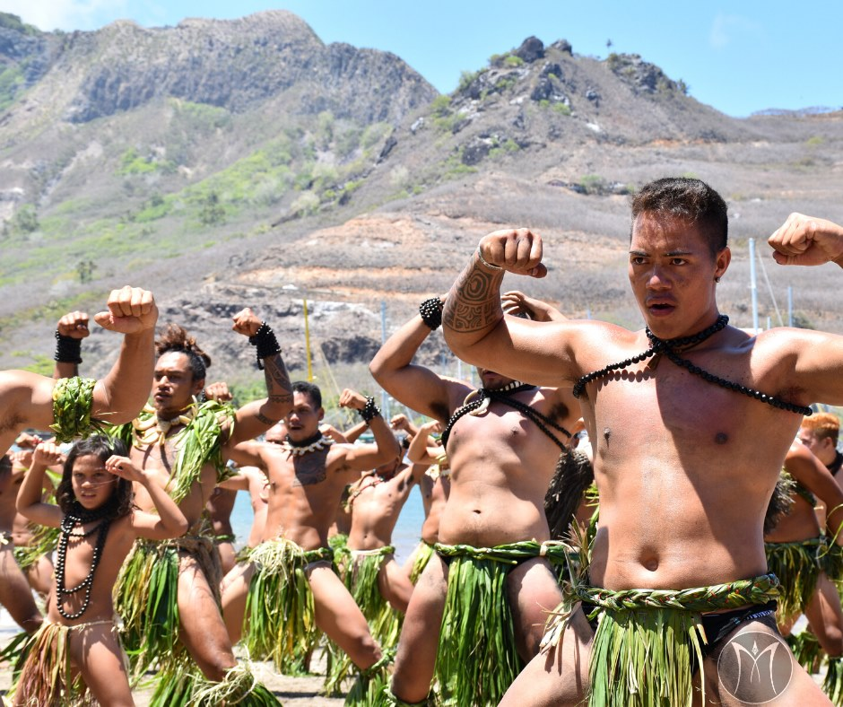

MANA
Introduction
Mana is an energy present in all living beings , whether human , animal , plant or mineral . However, it is not present in the same quantity. Some people possess a greater quantity, giving them special talents such as magic . Being hereditary , this is how the great lines of mages , or families of humans who possess more than normal, were formed .
Mana is considered a positive force that can be used for healing, protection, and bringing prosperity. The ancient Marquesans believed that some people possessed more Mana than others, and these individuals were often chiefs, warriors, or priests. Even today, Mana remains an important concept in the Marquesas Islands. Visitors can learn more about Mana by participating in cultural tours, traditional dances and songs, and by exploring archaeological sites and museums.
Mana is a mythical and fundamental concept originating from the great creator Taaroa Nui. It is both tangible and intangible, perceptible and expressive, yet also mysterious. Taaroa created Papa Fenua, the Polynesian land, and one day he came to Earth to observe his creation. He landed in Tahiti (formerly known as Raiatea), and his foot touched the ground at Vae Ara’i. It was at this place that Taaroa established the Taputapuatea marae, an open-air temple which is the cradle of Polynesian civilization and dedicated to the worship of his supreme power.
The term comes from the Melanesians (Polynesia) and was brought to us by the missionary Crodington in the 19th century . For them, mana is: a warrior more powerful than the others , a faster boat or animals reproducing faster than normal. Anything out of the ordinary is mana , relating to magic
History
Polynesian

The Haka, an ancient war dance originating from the Marquesas Islands, is renowned worldwide. This dance is considered an important form of cultural expression, used to transmit the history, customs, and values of the people. Dancers strive to convey "mana" through the Haka. Mana is a source of strength and power, often associated with qualities such as courage, wisdom, and generosity. For the people of the Marquesas Islands, the dance serves as a means of preserving their culture and values for future generations.
Tikis hold a significant place among objects imbued with mana in sacred sites, and often possess either protective or dark mana. A Tiki, or ti’i, represents a god, spirit, or deceased hero in anthropomorphic form. They are endowed with sacred power, possessing varying degrees of mana, and are considered repositories of supernatural energy.
Patutiki, the Marquesan tattooing art, is a sacred practice deeply rooted in Marquesan culture. Mana and tattooing are interconnected, as the act of marking the skin with a tattoo is believed to generate power. Blood is considered sacred during a tattooing session, and its vibrant red color also symbolizes life.
In their rites , it is transmitted through an amulet worn around the neck , as well as leaves attached to the belt , while pronouncing magical formulas . The amulet has no precise form, any object can transmit mana . However, certain objects and artifacts allow it to be transmitted more easily and in greater quantity in order to use it. Others have been made from it , releasing it when used. This is the case for all magical weapons possessing various properties.
Robert Henry Codrington (1830–1922), a pioneering Anglican missionary and British anthropologist, provided the first systematic and classic description of the concept of "Mana" in Melanesian cultures (particularly in the Banks Islands, Solomon Islands, and present-day Vanuatu) through his famous work The Melanesians: Studies in Their Anthropology and Folk-lore (1891), a book regarded as one of the earliest profound ethnographic studies of Melanesian religion; Codrington defines mana as an impersonal, invisible supernatural power pervasive in the universe that grants efficacy and success beyond ordinary human capabilities and common natural processes, being present in the atmosphere of life, attaching itself to persons and things, and manifesting through results attributable only to its operation, while emphasizing in his famous quotes that it is a force entirely distinct from physical power acting for both good and evil and that possessing or controlling it is of the greatest advantage, further explaining that religious practice there centers primarily on acquiring or directing this power for human benefit through prayer, rituals, and appeals to spirits and ancestors rather than the worship of a central supreme deity, as mana is not a material entity but an influence proven by practical outcomes such as excellence in hunting, warfare, or healing, which renders exceptional success definitive proof of possessing strong mana.
Maori
In Maori culture specifically, ‘mana’ is akin to your reputation, but more internalised rather than entirely dependant on what other people think of you (though that is a part of it). So if something dishonours you, it diminishes your mana.
In the Māori culture of New Zealand, there are two essential aspects of a person's mana: mana tangata, authority derived from whakapapa (genealogy) and mana huaanga, defined as "authority derived from having a wealth of resources to gift to others to bind them into reciprocal obligations".Hemopereki Simon, from Ngāti Tūwharetoa, asserts that there are many forms of mana in Maori beliefs.The indigenous word reflects a non-Western view of reality, complicating translation
Ngāti Kahungunu legal scholar Carwyn Jones comments: "Mana is the central concept that underlies Māori leadership and accountability." He also considers mana as a fundamental aspect of the constitutional traditions of Māori society
North America
Since the dawn of history, human societies have sought to understand the hidden forces that influence nature and humankind. Among these prominent concepts are "Mana" among the peoples of Melanesia and Polynesia, and "Orenda" among the Iroquois peoples of North America. Despite their geographical and cultural distance, these concepts reveal a shared human perspective: the belief in the existence of an impersonal, spiritual, and active force in the universe.
Orenda is an Iroquois word that means "an invisible spiritual power that resides in all living things and inanimate objects, and which can be used to influence the world through rituals, words, and actions."
The French anthropologist Marcel Mauss (1902) wrote in his book "A General Theory of Magic": "Mana, Orenda, and Manitou are merely different expressions of a single idea: the existence of an impersonal, supernatural power that gives the world and humankind their efficacy. This power is neither a material substance nor a god, but rather the foundation of every primitive religious concept of magic and sacredness."
The religious historian Mircea Eliade (1949) wrote in his book "Patterns in Comparative Religion": "Mana is not a being, but a power. It is impersonal, yet it can be embodied in persons or objects. It represents the primordial form of the sense of the sacred, a sense that we find in all religions. What we call Orenda or Manitou among the Native Americans is an expression of the same human experience of the impersonal sacred."
Manitou is a magical spirit or power that exists in everything: trees, animals, rocks, and even the weather. People believed that they could harness Manitou to achieve their goals. It is very similar to Mana: impersonal, yet it bestows power and efficacy.
Wakan is the sacred power or cosmic energy, present in everything living and non-living. It is used to explain natural phenomena, success in war or hunting, and spiritual experiences. It is similar to Mana in that it is a universal and impersonal force.
South America
Since ancient times, various cultures have developed concepts to explain the hidden forces that govern nature and human life. In South America, several concepts emerged that are similar to the concept of Mana in the Pacific region, such as Tio among the Inca, Kakuna among Amazonian tribes, and Axé in the African-Brazilian cultural tradition. Each of these represents an invisible, spiritual force that influences the world, and they have been of interest to researchers in anthropology and religious studies.
Tio is a spiritual entity revered by the Inca people, particularly associated with the mountains and caves, such as the famous Pukara del Tio in Peru. It is believed that Tio guards minerals, especially silver and copper, and has the power to reward or punish miners and those who enter its sacred spaces. Tio is considered a dual force, capable of both benevolent and malevolent influence depending on human respect and behavior. Scholars such as Peter Gose (1994) note that Tio represents an impersonal spiritual energy in the Andes that controls human affairs and natural phenomena, much like the concept of Mana in Polynesia. Thierry Saignes (1985) also emphasizes that offerings and rituals performed for Tio were essential for ensuring protection and success in everyday life.
Kakuna is a spiritual concept among Amazonian tribes, such as the Yawanawá and Katukina, representing the vital force that inhabits plants, animals, and ritual objects. Shamans utilize Kakuna to heal the sick, protect the community, or ensure success in hunting. Like Mana, Kakuna is an invisible, pervasive force that can be directed through ceremonies, songs, and visions. Anthropologists such as Darrell A. Posey (1985) describe Kakuna as a living spiritual power embedded in the natural world, while Michael Harner (1972) highlights the role of shamanic rituals in invoking Kakuna to restore balance and influence events in both human and non-human realms.
Axé is a central concept in Afro-Brazilian traditions, particularly in Candomblé and Capoeira, referring to the vital, spiritual energy present in all beings and objects. It is believed that Axé can be harnessed for healing, protection, courage, and empowerment. Rituals, music, and dance are key in activating and directing Axé, similar to how Polynesian Mana is channeled through ceremonies. Scholars such as David Brown (2003) note that Axé functions as a dynamic spiritual force that connects humans to the sacred, while Edward Taylor (1999) emphasizes that musical and dance performances are crucial for mobilizing Axé and maintaining spiritual vitality within the community.
Hawaiian
A person may gain mana by pono "right actions". In ancient Hawaii, there were two paths to mana: sexual means or violence. In at least this tradition, nature is seen as dualistic, and everything has a counterpart. A balance between the gods Kū and Lono formed, through whom are the two paths to mana. Kū, the god of war and politics, offers mana through violence; this was how Kamehameha gained his mana. Lono, the god of peace and fertility, offers mana through sexuality.[citation needed] Prayers were believed to have mana, which was sent to the akua at the end when the priest usually said "amama ua noa," meaning "the prayer is now free or flown
Ancient Hawaiians also believed that the island of Molokaʻi possessed mana compared with its neighboring islands. Before the unification of the Hawaiian Kingdom by King Kamehameha I, battles were fought for possession of the island and its south shore fish ponds, which existed until the late 19th century
The Iroquois believed that every human, animal, and even stone possessed a share of this power. A successful warrior, shaman, or skilled hunter was said to possess a strong Orenda. Orenda could be activated through songs, chants, dreams, and visions, and was therefore associated with magical power and sacred words.
Europe
In Estonian, a language in Europe, the word mana is related to magic. manama - literally "to mana" - means "to conjure/cast a spell" (-ma is a suffix that indicates doing something, eg "joo" means "drink" and "jooma" is "to drink"). manamine - "mana*-ing*" would be an invocation (-mine indicates that something is being done "joomine" - drinking) Also "manala" - "the place of mana" refers to the underworld. Some of this refers to the ancient religion that was in Estonia before Christianity. The word is also used quite a bit to refer to magical things from the past few centuries.
Theories
The most significant property of mana is that it is distinct from, and exists independently of, its source. Animae act only through mana. It is impersonal, undistinguished, and (like energy) transmissible between objects, which can have more or less of it. Mana is perceptible, appearing as a "Power of awfulness" (in the sense of awe or wonder).Objects possessing it impress an observer with "respect, veneration, propitiation, service" emanating from the mana's power. Marett lists several objects habitually possessing mana: "startling manifestations of nature", "curious stones", animals, "human remains", blood,thunderstorms, eclipses, eruptions, glaciers, and the sound of a bullroarer
Research
The prominent French anthropologist Marcel Mauss (1872–1950) developed a comprehensive theory regarding the concept of "Mana" in his celebrated work A General Theory of Magic, where he identified it as the universal magical force par excellence—an essentially impersonal power that manifests through objects, beings, and actions; Mauss posits that mana is absorbed or acquired from external sources, including nature with its elemental forces found in animals, stones, and wind, or through the souls of ancestors and nature spirits who bestow this power upon magicians and shamans via ritual contracts or the possession of sacred creatures, while emphasizing that this force is subject to depletion or loss of efficacy through misuse, the violation of taboos, or failure to respect social and ritual rules, which may lead to the waning of its power or its transformation into a source of harm.